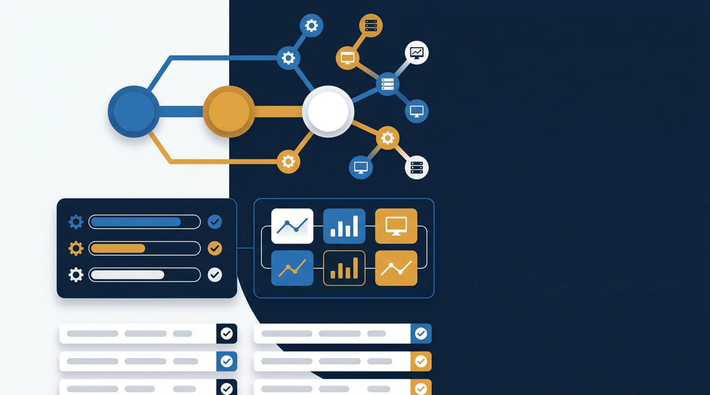
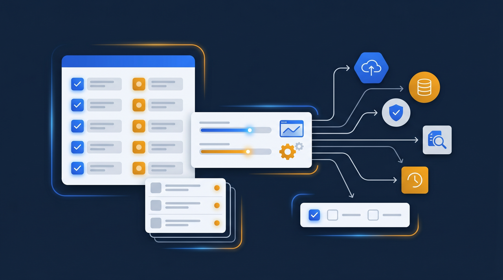
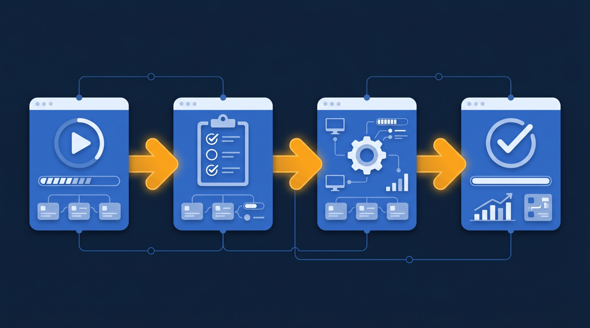

「毎年、同じ講習を全国の支部で開いている」——業界団体や協会の事務局では、よく聞く話です。会場を押さえ、講師を手配し、会員に案内を出し、当日の出欠を取り、修了の記録を残す。この一連の作業を、地域ごとに何度も繰り返していませんか。この記事では、協会・団体の会員教育をオンライン化し、全国の会員へ無理なく横展開していく進め方を、事務局の実務目線で整理します。

業界団体・協会の会員教育とは？まず全体像を整理する
業界団体や協会が行う会員向けの教育には、いくつかの種類があります。新しく会員になった人へ向けた入会時の研修、資格を取るための講習、取得した資格を維持するための更新講習、制度改正や業界動向を伝える定例セミナー。呼び方は団体によってさまざまですが、共通しているのは「会員に一定の知識や基準を身につけてもらい、その業界全体の質を保つ」という目的です。
ところで、こうした会員教育は、長く対面の集合研修で行われてきました。会場に会員を集め、講師が登壇し、資料を配って学んでもらう。この形には、その場の熱量や会員同士の交流といった良さがあります。一方で、事務局にとっては運用の負担がとても重い、という面もあるんです。会場費、講師への謝礼、案内の郵送、当日の受付、終わったあとの修了証の発行。これを支部ごと、回ごとに繰り返すとなると、事務局の人手がいくらあっても足りない、という声をよく聞きます。
そこで近年、座学で伝えられる部分を中心に、会員教育をオンライン化する団体が増えてきました。オンライン化といっても、いきなり全部を置き換えるわけではありません。知識を伝える講習は動画とテストに任せ、実技や交流が目的の回は対面で残す。この組み合わせから始める団体が多い傾向があります。経済産業省が掲げる人的資本経営の流れの中でも、組織として人を育てる仕組みを整えることの重要性が示されていて、団体単位での教育の仕組み化は、その業界全体の底上げにつながる取り組みと位置づけられます。
なぜ会員教育のオンライン化が求められているのか
では、どうして今、会員教育のオンライン化が話題になるのでしょうか。背景には、団体が抱える事情がいくつか重なっています。
1. 会員が全国に散らばっている
多くの業界団体は、全国に会員を抱えています。北海道の会員も、九州の会員も、同じ講習を受ける必要がある。けれど、毎回全員を一か所に集めるのは現実的ではありません。そこで支部ごとに同じ講習を開くわけですが、今度は支部の数だけ会場と講師と事務が必要になる。会員からすれば、わざわざ移動して半日や一日を使うのは負担ですし、遠方ほど参加しづらくなります。オンラインなら、住んでいる場所に関係なく、同じ内容を同じ品質で届けられますよね。
2. 事務局の人手が限られている
団体の事務局は、少人数で運営されていることが多いものです。日常の会員対応や会費の管理に加えて、教育の運用まで担うとなると、業務はパンクしがちです。とくに修了の記録は、紙の受講票を一枚ずつ確認してExcelに転記する、といった手作業が残っている団体も少なくありません。この事務作業が、オンライン化と受講管理の仕組みで大きく減らせるわけです。
3. 受講記録の正確さが問われる場面が増えている
資格講習や更新講習では、「誰が、いつ、どの講習を受けたか」を正確に記録しておくことが求められます。後から照会されたときに、記録があいまいだと団体の信頼にかかわります。手集計のままだと、転記ミスや記録漏れの心配がつきまといますよね。受講から記録までを一つの仕組みでつなげば、こうした不安を減らしやすくなります。

オンライン化を進める4つのステップ
ここからは、実際に会員教育をオンライン化していく手順を見ていきます。一度に全部を変えようとすると事務局が疲弊しますから、小さく始めて広げる、という順番がおすすめです。
ステップ1：オンライン化する講習を1つ選ぶ
最初に手をつけるのは、「毎年ほぼ同じ内容を繰り返している講習」です。たとえば、入会時の基礎研修や、制度の概要を説明する定例講習。すでに台本や資料が固まっているので、教材化の手間が少なく、効果も見えやすい。新しい講習をいきなりオンライン専用で作るより、既存の定例講習から始めるほうが着手しやすい傾向があります。
ステップ2：講習を動画と資料に置き換える
選んだ講習を、動画と資料の形に整えます。これまで会場で講師が話していた内容を、カメラの前で話して録画する。スライドを使う講習なら、画面と音声を一緒に収録する方法もあります。最初から凝った映像を目指す必要はなく、「会場に来られなかった会員が、これを見れば同じ知識を得られるか」を基準にすると、過不足のない教材になります。
ステップ3：確認テストと修了の条件を決める
動画を見せて終わり、にしないことが大切です。受講後に確認テストを用意し、何問以上の正解で修了とするか、という条件をあらかじめ決めておきます。これで「見た」だけでなく「理解した」ところまでを記録に残せます。資格にかかわる講習では、この修了の記録がそのまま証明の役割を果たすことになるため、条件は団体の中できちんと合意しておくとよいでしょう。
ステップ4：受講管理の仕組みに載せる
最後に、教材と受講記録を学習管理システム（LMS）に載せます。会員を招待し、各自のペースで受講してもらい、誰がどこまで進んだか、テストに合格したかを自動で記録する。事務局は進捗の一覧を見るだけで状況を把握でき、修了証の発行も仕組みの中で処理できます。紙の受講票を集めて転記する作業から解放されるわけです。

全国の支部・会員へ横展開する進め方
オンライン化が1つの講習でうまく回り始めたら、次は横展開です。ここが団体ならではの大きなメリットになります。
ある資格団体を例に考えてみましょう。仮に、全国に十数の支部があり、これまで各支部が独自に入会研修を開いていたとします。支部によって講師も違えば、説明する範囲も微妙に違う。会員からすれば、どの支部で受けたかによって学んだ内容に差が出ていた、ということが起こりがちです。ここで本部が作った教材を全支部で共通に使うようにすると、講師や開催地による内容のばらつきを抑えやすくなります。会員はどこにいても同じ内容を学べ、支部の事務局は教材を一から作る必要がなくなるわけです。
横展開で気をつけたいのは、地域ごとの事情をどう扱うかという点です。全支部で共通に伝えるべき必須の内容は本部の教材で揃え、支部ごとの慣習や地域特有の補足だけを各支部が足す。こうした役割分担にすると、統一感と地域性を両立しやすくなります。なんでも本部で固めてしまうと現場が窮屈になりますし、逆に支部任せにしすぎると元のばらつきに戻ってしまう。この中間を探っていくのが運用の腕の見せどころですよね。
そしてもう一つ、横展開のときに効いてくるのが受講管理です。会員数が数百人、数千人という規模になると、誰がどの講習を受けたかを手作業で追うのは現実的ではありません。LMSに載せておけば、全国の会員の受講状況を本部から一覧で把握できます。受講が遅れている会員へ案内を出す、修了者へ一括で修了証を発行する、といった運用も仕組みの中で進められるわけです。
資格の更新講習・継続教育での活用
会員教育の中でも、資格の更新講習や継続教育は、オンライン化の効果が出やすい領域です。
更新講習は、すでに資格を持っている会員に、定期的に最新の知識を学び直してもらうものです。制度改正の周知や、業界の新しい基準の共有など、内容は座学が中心になることが多い。こうした「知識を伝える」部分は、動画と確認テストに置き換えやすいんです。会員は自分の都合のよい時間に受講でき、会場まで足を運ぶ必要がない。事務局も、毎年同じ更新講習を支部ごとに何度も開く負担から解放されます。
ただし、ここで一つ注意が必要です。資格制度によっては、更新講習の受講方法に要件が定められていることがあります。「対面での受講を必須とする」「一定時間以上の受講を確認できること」といった条件です。オンライン化を進める前に、その資格制度を所管する官公庁や上部団体の案内を確認し、要件に沿った設計にすることが欠かせません。仕組みの上では受講時間や合否を記録できますから、要件を満たしていることを示す材料としても活用しやすい傾向があります。
継続教育の場合も考え方は同じです。年に数回の学びの機会を、すべて対面で用意するのは大変ですが、一部をオンライン教材にしておけば、会員が自分のペースで学べる選択肢が増えます。対面でしか得られない交流の場は残しつつ、知識の習得はオンラインで効率化する。この使い分けが、会員満足と事務効率の両立につながっていくわけです。
オンライン化で気をつけたいこと
最後に、会員教育をオンライン化するうえで、事務局として押さえておきたい点を挙げておきます。
まず、対面の価値をまとめて切り捨てないこと。団体の集まりは、知識を得る場であると同時に、会員同士が顔を合わせて関係を深める場でもあります。すべてをオンラインに置き換えてしまうと、その交流の機会が失われ、団体としての結びつきが弱まることがあります。座学はオンライン、交流は対面、というように、目的で使い分ける発想が大切です。
次に、ITに不慣れな会員への配慮を忘れないこと。会員の年齢層が幅広い団体では、オンライン受講そのものに戸惑う人もいます。操作手順を分かりやすくまとめた案内を用意する、問い合わせ窓口を設ける、最初の数回は電話でサポートする、といった支えがあると、受講が進みやすくなります。仕組みを入れたのに使われない、という事態は、操作のしやすさと案内の丁寧さで防ぎやすくなります。
そして、受講記録を組織の資産として管理すること。会員教育の記録は、団体の運営の根拠になる大切な情報です。担当者の個人PCやばらばらのファイルに分散すると、引き継ぎのたびに混乱します。受講履歴・修了記録を一つの仕組みに集約し、誰が事務局を担当しても同じように参照・運用できる状態を保つことが、長く続けるための条件になります。なお、こうした会員教育の整備や教材制作には、人材開発支援助成金のように研修費用の一部を助成する制度を活用できる場合があります。制度の対象や条件は変わることがあるため、最新の案内を確認しながら検討してみてください。
まとめ：会員教育を「仕組み」にして全国へ届ける
業界団体・協会の会員教育は、長く対面の集合研修に支えられてきました。その良さを残しつつ、座学で伝えられる部分をオンライン化していくと、会場や講師の手配、出欠の管理、修了の記録といった事務局の負担を大きく減らせます。
進め方は、毎年同じ内容を繰り返している講習を1つ選び、動画と確認テストに置き換え、受講管理の仕組みに載せるところから。そこで回り始めたら、本部の教材を全支部へ展開し、全国の会員へ同じ品質の教育を届けていく。資格の更新講習や継続教育でも、制度の要件を確認しながら、座学部分を効率化できます。
会員教育を個々の支部の頑張りではなく、団体としての仕組みに変える。それは事務局を楽にするだけでなく、その業界全体の質を底上げし、会員にとっての団体の価値を高めていく取り組みでもあります。まずは、いちばん負担になっている定例講習を1つ、オンライン化してみるところから始めてみてはいかがでしょうか。
よくある質問
毎年ほぼ同じ内容を繰り返している講習を1つ選び、その回をオンライン教材化するところから始めると着手しやすい傾向があります。新しい講習をいきなりオンライン専用で作るより、既に台本や資料が固まっている定例講習のほうが教材化の手間が少なく、効果も見えやすくなります。
すべてを置き換える必要はないことが多いです。座学で知識を伝える部分はオンラインに任せ、実技や意見交換、人脈づくりが目的の回は会場で行う、という組み合わせ（ブレンド型）が現実的です。会員同士の交流自体が団体の価値である場合は、対面の場を残す判断も検討に値します。
学習管理システム（LMS）を使うと、誰がどの講習をいつ受け、確認テストに合格したかが自動で記録されます。紙の受講票やExcelの手集計に比べて事務負担が大きく減り、後から受講履歴を照会される場面でも、記録をそのまま示しやすくなります。
更新講習のうち、知識の再確認や制度改正の周知といった座学部分は、オンライン教材と確認テストに置き換えやすい傾向があります。ただし、資格制度によっては受講方法に要件が定められていることがあるため、制度を所管する官公庁や上部団体の案内を確認したうえで設計することをおすすめします。
教材の登録や受講者の招待、進捗の確認といった日常運用は、専門知識がなくても操作できるよう設計されたLMSが増えています。導入時の設計や教材の作り込みは支援を受けつつ、日々の運用は事務局の担当者が無理なく回せる体制を整えると、属人化を避けやすくなります。
むしろ逆で、同じ教材を全支部へ配信するため、講師や開催地による内容のばらつきを抑えやすくなります。共通の必須講習は本部が作った教材を全支部で共通に使い、支部ごとの事情に応じた補足だけを各支部が足す、という運用にすると、統一感と地域性を両立しやすくなります。